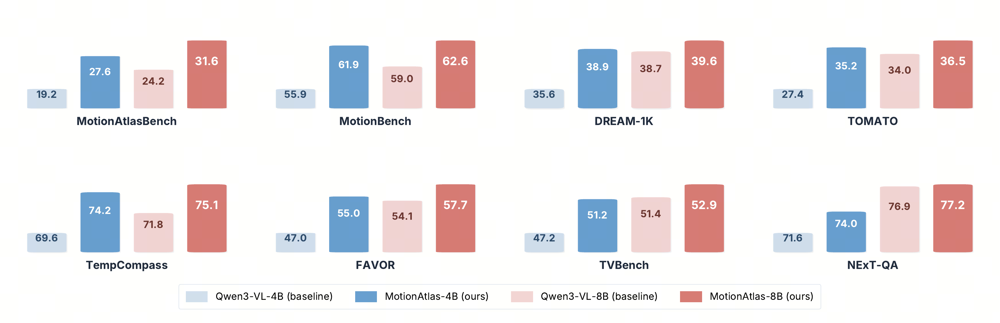
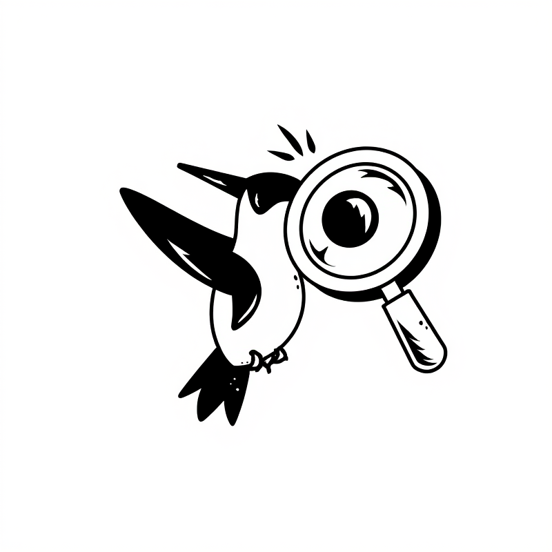
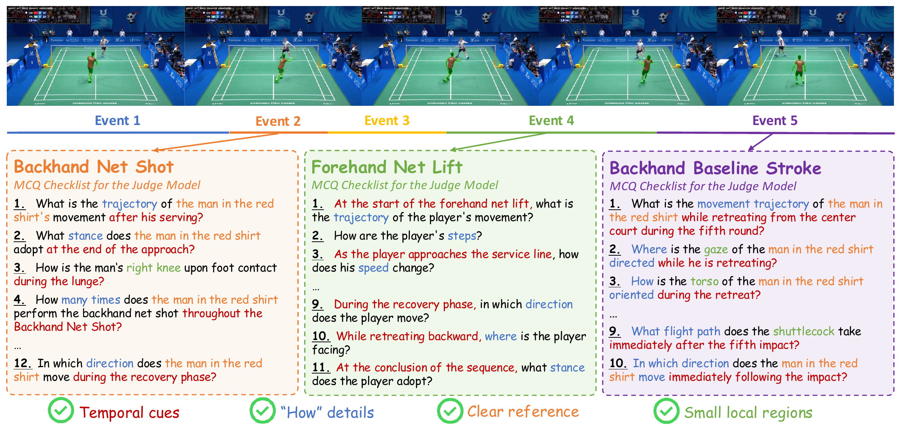

Consistent Gains Across Benchmarks
Our MotionAtlas consistently outperforms Qwen3-VL baselines across eight motion-related benchmarks.

ECCV 2026

Detailed Region Captioning for Motion-Centric Videos
1CASIA 2SJTU 3NTU 4PKU 5WHU 6BJTU
TL;DR: MotionAtlas shifts motion captioning from global video descriptions to region-aware motion captions, enabling precise evaluation through MotionAtlas-Bench and scalable training through MotionAtlas-Data.
MotionAtlas shifts motion captioning from global video descriptions to region-aware motion captions, with scalable training data and checklist-style evaluation over referred objects.
Our MotionAtlas consistently outperforms Qwen3-VL baselines across eight motion-related benchmarks.

Each video is decomposed into events and checked through multiple-choice questions over temporal cues, kinematics, references, and local regions.

Examples from MotionAtlas-Data. Given a user-specified region (highlighted in each clip), MotionAtlas produces a detailed, temporally grounded description of that region. Use the arrows to browse examples.
At the start of the sequence, the boy wearing a blue top stands beside the low horizontal bar. An adult woman in a dark green short-sleeve shirt supports his waist and back to assist him as he performs a forward flip. After the flip, his feet land steadily on the padded mat on the opposite side of the low bar.
Once stable on his feet, he immediately turns around, walks quickly toward the wooden steps next to the uneven bars, and climbs rapidly to the wooden jumping platform at the top. He then pushes off the platform, leaps upward with both arms fully extended, and grabs the high horizontal bar. Hanging beneath the bar with his arms completely straight, he swings gently back and forth a few times before releasing his grip. He drops straight down onto the thick bright red safety mat directly under the high bar.
His feet hit the mat first, and he bends his knees naturally to absorb the impact of landing, then straightens up to stand upright. After steadying himself, he turns and walks left across the red mat toward the side of the gym with wall bars and trampolines, moving away from the area under the high bar.
In a static high-angle shot set on a tiled floor, a light brown dog remains standing on all fours on the light beige ceramic tiles next to a pink, long-furred dog bed. Its head is lowered, with its snout close to the head and neck area of a Corgi wearing pink printed clothes inside the bed, repeatedly nudging and sniffing the Corgi with its nose, its attention fully focused on the Corgi throughout, while its tail hangs down naturally and its front legs firmly support its weight.
When the Corgi in the bed turns around and bites a gray blanket with a white five-pointed star pattern, the light brown dog steps forward to grab the other end of the blanket, engaging in a two-way tug-of-war with the Corgi: it adjusts its center of gravity by slightly shifting its front legs, its body swaying gently with the force of the pulling, during which it briefly lifts a front paw to touch the blanket, and its head moves slightly up, down, forward, and backward following the tugging motions as the two dogs yank the blanket back and forth, its tail lifting slightly and wagging gently during the process.
After tugging for a while, the Corgi lets go of the blanket and moves close to the light brown dog's snout; the light brown dog lowers its head to nuzzle and sniff snouts with the Corgi, making no further contact with the blanket. When the Corgi grabs the blanket again, plants its front legs on the edge of the dog bed, stands up straight, and lifts its head, the light brown dog also raises its head to interact face-to-face with the upright Corgi, maintaining its standing posture throughout and making minor adjustments to its body position to sustain the interaction.
Filmed on a handheld camera that pans horizontally to track a circular communal dance formation, the footage centers on a female dancer performing the energetic, traditional Indian Garba folk dance, clad in a voluminous black embroidered flared skirt paired with a bright green sheer scarf. Throughout the sequence, she maintains consistent, even spacing from her fellow dancers, aligns her movements perfectly with the collective group rhythm, and uses small, soft stepping motions to coordinate with every turn and positional change across the formation.
She first appears with her back to the camera, her own right arm raised above her head, her left arm bent loosely in front of her torso swaying gently to the beat, while her green scarf hangs down her back. As she takes small steps and turns gradually to face the viewer’s right, her arm positions shift fluidly with the dance. As the dance progresses, two foreground dancers—one in a deep purple embroidered long skirt, the other in a green top and bright yellow flared skirt—spin quickly clockwise to exchange positions, briefly obscuring the core dancer entirely; only a narrow strip of her green scarf remains visible during this brief occlusion.
She continues following the circular path of the formation, spinning rapidly clockwise around her own axis; the centrifugal force of her fast turns flares her heavy skirt out into a smooth, rounded arc while her green scarf is flung forward to float in front of her chest. When she turns her back fully to the camera, she transitions into fast counterclockwise spins, her skirt flaring out almost perfectly horizontal from the force of her rotation, her arms extended diagonally upward and out to her sides. As the clip concludes, she is still mid-spin, facing toward the viewer’s front-left, her green scarf floating lightly beside her with the momentum of her turns.
Seen from a first-person perspective traveling through a well-lit tunnel, a dark-colored SUV is initially positioned directly ahead in the left lane. Initial Straight-Driving Phase: the black sedan is centered in the frame, directly ahead of the camera car in the left lane and driving straight toward the background. A silver sedan ahead of it in the right lane accelerates forward and quickly exits the right side of the frame.
Right Lane-Change Phase: intending to overtake a white vehicle, the distance between the two cars rapidly decreases. The black sedan smoothly steers to the right, gradually crossing the dashed white dividing line, and enters the right lane.
Emergency Left Evasive Phase: just as the black sedan enters the right lane and accelerates to pass the white car, it immediately activates its left turn signal and makes an emergency swerve to the left, darting back into the left lane and traveling diagonally toward the left side of the frame, getting as close as possible to the solid white line separating the oncoming traffic.
Post-Evasion Realignment Phase: after fully returning to the left lane, the black sedan crosses paths with a white SUV that has entered the right lane, then makes a minor rightward steering correction to straighten out and continues driving straight ahead in the left lane.
MotionAtlas-Bench uses dense checklist-style questions to judge detailed motion captions over referred objects.
MotionAtlas-Data provides scalable region-level motion captions refined to suppress fine-grained hallucinations.
MotionAtlas-Data emphasizes dense action verbs and detailed temporal motion descriptions.
Training on MotionAtlas-Data improves both region-level motion captioning and broader motion-related video understanding.
| Model | SF Overall | SF Parts | SF Kin. | FS Overall | FS Parts | FS Kin. |
|---|---|---|---|---|---|---|
| Gemini 3 Pro | 36.4 | 34.7 | 32.0 | 36.5 | 33.5 | 38.1 |
| GPT-5.2 | 36.9 | 34.0 | 34.2 | 37.6 | 38.8 | 36.6 |
| Qwen3-VL-235B | 30.5 | 27.8 | 28.9 | 33.7 | 33.2 | 31.1 |
| Qwen3-VL-4B | 19.3 | 20.0 | 14.1 | 21.7 | 22.4 | 16.5 |
| + MotionAtlas-Data | 27.7 ↑ 8.4 | 27.9 | 26.9 | 30.1 ↑ 8.4 | 30.3 | 29.3 |
| Qwen3-VL-8B | 24.3 | 23.9 | 20.3 | 26.7 | 24.6 | 26.7 |
| + MotionAtlas-Data | 31.6 ↑ 7.3 | 31.2 | 30.6 | 34.1 ↑ 7.4 | 33.6 | 33.0 |
SF = Single-Frame Grounding, FS = Full-Sequence Grounding. Values are accuracy.
| Model | MotionBench | DREAM-1K | TOMATO | NExT-QA | TempCompass | FAVOR | TVBench |
|---|---|---|---|---|---|---|---|
| GPT-5.2 | 65.4 | 42.2 | 53.0 | 79.9 | 73.0 | 56.8 | 53.8 |
| Gemini 2.5 Pro | 62.0 | 42.7 | 48.6 | 79.8 | 73.7 | 58.8 | 59.9 |
| Qwen3-VL-4B | 55.9 | 35.6 | 27.4 | 71.6 | 69.6 | 47.0 | 47.2 |
| + MotionAtlas-Data | 61.9 ↑ 6.0 | 38.9 ↑ 3.3 | 35.2 ↑ 7.8 | 74.0 ↑ 2.4 | 74.2 ↑ 4.6 | 55.0 ↑ 8.1 | 51.2 ↑ 4.0 |
| Qwen3-VL-8B | 59.0 | 38.7 | 34.0 | 76.9 | 71.8 | 54.1 | 51.4 |
| + MotionAtlas-Data | 62.6 ↑ 3.6 | 39.6 ↑ 0.9 | 36.5 ↑ 2.5 | 77.2 ↑ 0.2 | 75.1 ↑ 3.3 | 57.7 ↑ 3.6 | 52.9 ↑ 1.5 |
| Method | MotionAtlas | MotionBench | DREAM-1K | TOMATO | NExT-QA | TempCompass | FAVOR | TVBench |
|---|---|---|---|---|---|---|---|---|
| Qwen3-VL-4B | 19.2 | 55.9 | 35.9 | 27.4 | 71.6 | 69.6 | 47.0 | 47.2 |
| w/ MotionAtlas-Data | ||||||||
| 20% (32K) | 22.9 | 58.9 | 36.9 | 28.4 | 72.2 | 71.2 | 48.1 | 47.0 |
| 60% (95K) | 24.6 | 59.5 | 37.0 | 30.1 | 73.0 | 72.3 | 50.9 | 49.0 |
| 100% (159K) | 28.3 | 61.9 | 38.9 | 35.2 | 74.0 | 74.2 | 55.0 | 51.2 |
| w/o MotionAtlas-Data | ||||||||
| 20% (32K) | 12.9 | 57.4 | 37.3 | 29.0 | 70.9 | 70.8 | 47.4 | 46.7 |
| 60% (95K) | 12.9 | 58.8 | 36.9 | 30.7 | 71.3 | 72.3 | 50.6 | 47.4 |
| 100% (159K) | 12.2 | 60.5 | 38.3 | 28.4 | 71.9 | 73.3 | 52.2 | 48.5 |
Adding MotionAtlas-Data brings more significant improvements as training data scales.
| Method | Acc | Recall | Precision |
|---|---|---|---|
| MA Pipeline (full) | 39.9 | 68.2 | 58.5 |
| w/o Self-Bootstrap | 36.4 | 64.1 | 56.8 |
| w/o Full-Video Caption | 33.2 | 58.9 | 56.4 |
| w/o Spatial Crop | 32.7 | 60.9 | 53.6 |
Each component contributes to more accurate and recall-rich motion captions.
@article{liu2026motionatlas,
title={MotionAtlas: Detailed Region Captioning for Motion-Centric Videos},
author={Liu, Weisong and Wang, Haochen and Gao, Kuan and Wang, Yuhao and Zhou, Yikang and Ren, Zhongwei and Mai, Jacky and Wang, Anna and Li, Yanwei and Li, Jason and Zhang, Zhaoxiang},
journal={arXiv preprint arXiv:2606.29531},
year={2026},
eprint={2606.29531},
archivePrefix={arXiv},
url={https://arxiv.org/abs/2606.29531}
}